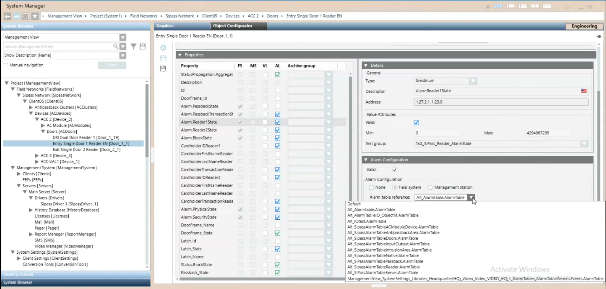

(Option 2) Apply Alarm Table to SiPass Point
This procedure is part of the workflow for customizing SiPass alarm tables.
Prerequisites
Apply the Modified Alarm Table to Individual SiPass Points
Use this method, for example, to modify the alarm table only for a specific door reader, rather than for all door readers.
- Select the SiPass point for which you want to use the modified alarm table. For example Project > Field Network > [SiPass network] > [SiPass server] > […] > [Doors] > [Entry Single Door 1 Reader].
NOTE: You can also use CTRL or SHIFT to make a multiple selection, for example of two or more door readers to which you want to apply the same modified alarm table. - In the Object Configurator tab, open the Properties expander.
- In the list on the left, select the Property of this object to which you want to associate the modified alarm table. This must be one corresponding to the selected object, for which the FS column is checked. For example, Alarm.Reader1State.
- The Details, Alarm Configuration and other expanders on the right update to show the settings of the selected property.
- In the Alarm Configuration expander:
a. Set the Valid field so it displays a gray (not blue) checkmark.
b. Leave the Alarm Configuration field to Field system.
c. From the Alarm table reference drop-down list, select the [customized SiPass alarm table] that you want to use for this object. - Click Save
 .
. - Stop and then re-start the SiPass driver to enable the new table. See Stopping and Starting the SiPass Driver.
- The modified alarm table will apply to the selected SiPass points.
